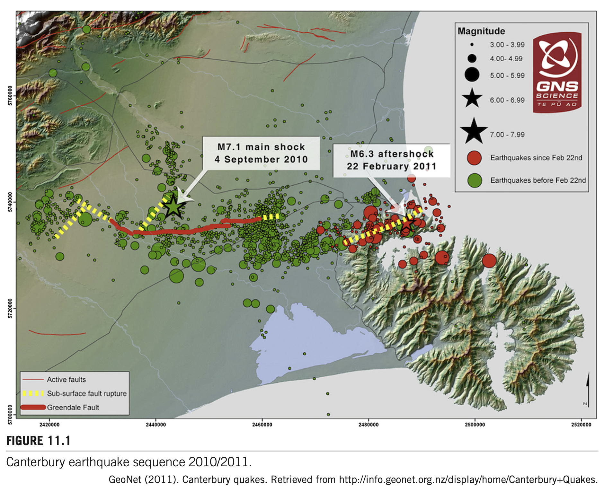
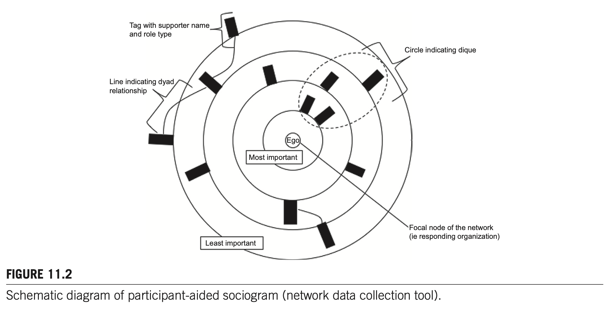
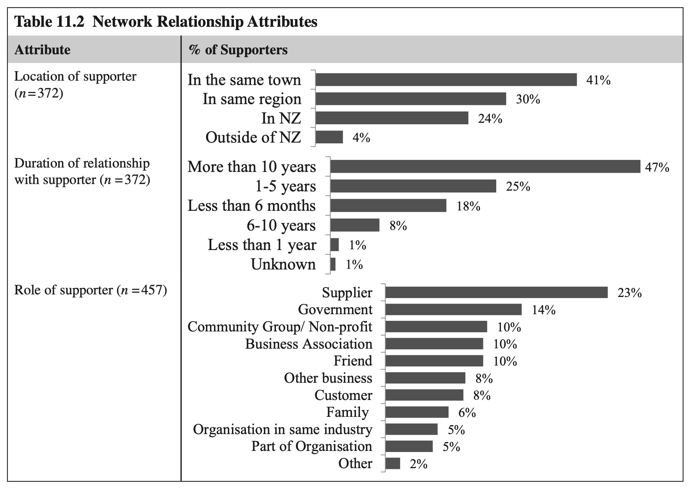
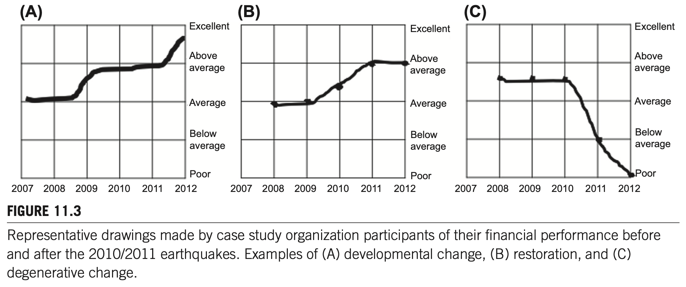
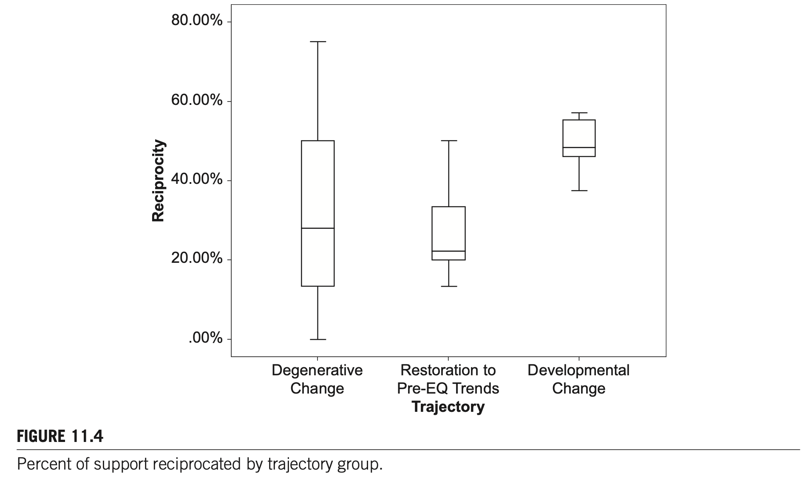

2010/11년 뉴질랜드 캔터베리 지진 이후 조직 지원 네트워크와 관계적 레질리언스
서론 및 이론적 배경
재난 연구의 전통적 흐름은 주로 소방·군·경찰 등 공공 대응기관(first responders)이나 구호단체의 활동에 집중되어 왔습니다. 그러나 생존과 복구의 기로에 서는 주체는 바로 지역 상권을 지탱하는 민간 비즈니스 조직과 중소상공인입니다.
본 장은 2010년과 2011년 연속 지진으로 도심 중심지가 2.5년간 전면 통제된 뉴질랜드 캔터베리 지역의 32개 민간 기업을 종단 추적하여, "외부 지원 네트워크와 관계적 레질리언스(Relational Resilience)"가 조직의 생사를 어떻게 갈랐는지를 실증적으로 규명합니다.
2. RQ2: 재난 후 지원 네트워크를 구성하는 관계들(kinds of relationships)은 어떤 지리적·시간적·역할적 속성을 띠는가?
3. RQ3: 긍정적 복구 궤적(발전적 변화)을 경험한 조직과 퇴행적 궤적(쇠퇴)을 겪은 조직 간에 네트워킹 행동 양식(networking behaviors)은 어떻게 다른가?
이론적 프레임워크: 조직 레질리언스와 사회자본
- 조직 레질리언스의 예술성(Craftsmanship): James Kendra와 Tricia Wachtendorf(2003)는 조직 레질리언스를 고정된 정적 자산이 아니라, 예술성(artistry), 지각(perception), 환경 변화 감지력, 그리고 학습을 통해 대응을 끊임없이 조정해 나가는 일종의 '장인정신(craftsmanship)'으로 정의함.
- 확장된 자원 기반(Extended Resource Base): 중소기업은 내부에 중복 시스템이나 대규모 비축 자원을 유지할 여력이 없음. 따라서 위기 시 필요한 자원과 역량은 조직 외부의 관계망을 통해 조달되어야 함.
- 네트워크 행위주체성(Network Agency): 재난 피해 조직은 수동적 수혜자가 아님. 문제를 감지하고(Perception), 상호 보답하며(Reciprocity), 대안을 비판적으로 평가(Evaluation)하는 능동적 주체로서 네트워크를 경영해야 함.
캔터베리 지진 시퀀스 및 연구방법론
뉴질랜드 남섬 캔터베리는 2010년 9월부터 2011년 12월까지 6차례의 대형 강진과 수천 회의 여진이 연속 발생한 다중 재난 지역입니다.
- 2010년 9월 4일 다필드 지진 (M7.1): 극심한 진동과 국지적 액상화 피해 발생. 새벽 시간 발생으로 사망자 0명.
- 2011년 2월 22일 크라이스트처치 지진 (M6.3): 도심(CBD) 10km 거리 얕은 심도에서 발생하여 185명 사망, 도시 인프라 괴멸, 도심 통제선(CBD Cordon) 2.5년간 유지.
- 주거지 레드존(Residential Red Zone) 지정: 7,850채 이상 거주 불합격 판정, 일부 외곽 지역 인구 63% 유출에 따른 상권 배후지 붕괴.

참여자 보조 소시오그램(Participant-aided Sociograms) 기법
피해 조직 대표자와의 1.5~4시간 심층 인터뷰 중 대형 전지 위에 4개의 동심원(Concentric Circles)을 배치하고, 지원자 명칭이 적힌 이동식 태그(Moveable Tags)를 중심으로부터의 거리에 따라 배치하도록 함.
32개 조직이 지목한 총 457개 지원자 중 세부 속성(역할, 기간, 위치, 지원 유형, 시점)이 정밀 코딩된 372개 지원자 네트워크 관계를 추출하여 SPSS 19, UCINET, QSR NVivo 9으로 분석함.

실증 분석 결과: 지원 유형 및 관계 속성
1. 복구 지원 유형 (Types of Support)
| 지원 유형 (Type of Support) | 구체적 내용 설명 (Description) | 비율 (%) |
|---|---|---|
| 용역, 실무 지원 및 노동 | 매장 판매 지원, 건물 수리/철거, 세무 대행, 이전 보조, 잔해 청소 | 37% |
| 정서적 대처 지원 | 안부 확인("Checking in"), 공감과 위로, 격려 이메일 및 전화 (만성 스트레스 완충) | 31% |
| 금전적/재정적 지원 | 대출, 기부금, 정부 지원금, 의도적 제품 구매, 보험금, 임금 보조금, 채무 면제 | 30% |
| 비금전적 물적 자원 | 임시 숙소, 보관 창고, 차량, 업무 장비, 가구/비품, 사무용품, 직원 거주지 | 25% |
| 조언 또는 정보 | 비즈니스 멘토링, 법률·재무 자문, 구호금 신청처 및 절차 안내 | 23% |
| 사회적 영향력 및 브로커리지 | 수평적·수직적 가교(Bridging/Linking), 대체 공급선 중개, 조직 대외 옹호 | 10% |
*Table 11.1 분석 데이터: 32개 조직이 보고한 6대 상호 배타적 지원 범주. 각 지원자는 1~6가지 지원을 복합 제공.
2. 지원 네트워크 구성 관계 속성 (Table 11.2)

| 속성 분류 (Attribute) | 세부 속성 구분 | 비율 (%) 및 핵심 통계 |
|---|---|---|
| 지원자의 소재지 (Location, n=372) |
• 캔터베리 지역 내부 (Within Canterbury) • 캔터베리 지역 외부 (Outside Canterbury) |
> 70% < 30% |
| 관계 지속 기간 (Duration, n=372) |
• 10년 이상 장기 관계 (More than 10 years) • 지진 최소 1년 전 형성 (Formed ≥ 1 yr before) • 지진 전 교류 없던 신규 관계 (New / No prior interaction) |
~47% > 80% ~17% |
| 지원자의 역할 (Role, n=457) |
• 재화 및 용역 공급업체 (Suppliers) • 정부 기관 및 지역사회 단체 (Government & Community) • 친구 및 가족 구성원 (Friends & Family) |
압도적 최다 (Most common) 주요 지원 출처 (Common) 주요 지원 출처 (Common) |
성과 궤적별 네트워킹 행동 양식
1. 조직 성과 궤적의 3대 분류 (Figure 11.3)

(A) 발전적 변화 (Developmental change, n=8), (B) 회복 (Restoration, n=6), (C) 퇴행적 변화 (Degenerative change, n=18).
조직의 성패를 가른 유일한 차이는 "재난 이후 자신을 둘러싼 사회·경제적 네트워크 맥락과 어떻게 상호작용했는가(Networking Behaviors)"였습니다.
현지 사정에 밝은 지역 직원 비율이 높았고, 지진 후 상인회 정보 회의와 상권 프로모션에 적극 참여하여 정밀한 '센서망'을 가동함. 경쟁업체들의 폐업 공백을 간파하고 인기 상품군을 신속히 입점시켜 매출 급증. 건물이 붕괴되지 않았음에도 향후 내진 안전성 기준 미달 위험을 센서로 미리 포착하고 안전한 신규 부지로 선제적 이전 단행.
2010년 지진으로 경쟁점이 무너지자 일시적 매출 폭증을 경험했으나 2013년 심각한 경영 파탄 직면. 인근 주거지가 '레드존'으로 지정되어 배후 인구의 63%가 유출되었으나 점주는 이 위험을 전혀 지각하지 못함. 상인회 미가입, 관외 친족망에만 의존, 지역 행사 불참으로 '환경 감지 센서'가 완전히 결핍되었기 때문임.
크라이스트처치 CBD 매장 파괴 후 북섬 웰링턴으로 이전. 영업중단보험 유지로 재정 기반 확보 + 동업 파트너 간 깊은 신뢰를 바탕으로 이전 타당성 공동 평가 + 지진 전부터 친밀했던 동료 사업자 모임에 계획을 공유하고 비판적 피드백을 수용하여 성공적 안착.
크라이스트처치 CBD 매장 파괴 후 오클랜드로 무리하게 이전하여 파산. 영업중단보험 실효로 자금 부족 + 1인 독단 의사결정 + 리커버 캔터베리 전문 멘토의 이전 만류 조언을 "지진 전에는 모르는 사이"라는 이유로 불신하고 묵살함. 비판적 평가 없는 독단적 이전이 파멸을 부름.
2. 상호성 관리: 증폭된 상호성(Amplified Reciprocity)의 함정

발전적 변화 조직은 평균 ~50%의 균형 상호성을 보인 반면, 퇴행적 변화 조직은 7%(고립)와 60% 초과(과부하)로 양극화(Bimodal).
퇴행적 조직 중 상호성 비율이 60%를 초과한 상위 25%는 '증폭된 상호성(Amplified Reciprocity)'의 덫에 걸렸습니다. 지진 후 조직 복구에 실질적으로 도움이 되지 않는 사적 지원(친족·친구)을 의무감에 거절하지 못하고 받아들인 뒤, 이에 보답하느라 한정된 조직 자원을 소진하며 자멸한 것입니다.
반대로 성공 조직들은 약 50%의 적정 상호성을 유지하면서, 공식적 무상 지원(정부, 협회)과 비공식적 상호 지원(동종 업계, 동료) 간의 전략적 포트폴리오를 구축하였습니다.
3. 책임의 분산: 코디네이터(Coordinators)와 클리크(Cliques)
- 지원 코디네이터 (Support Coordinators): 중심 조직을 대신하여 외부의 수많은 지원자와 소통을 조율해 주는 단일 창구. (예: 테일러 메이드 — 상인회가 정보 취합 대행; 익스큐티브 스위츠 — 점주 가족이 국세청 및 지원기관 접촉 전담 대행).
- 네트워크 클리크 (Cliques): 전원이 상호 밀접하게 연결된 집단. (예: 카이아포이 소사이어티 — 소속 단체 모임과 단체 회의·이메일로 다자간 소통을 일괄 처리하여 중복 소통 비용 획기적 절감).
종합 고찰 및 결론
본 연구는 조직의 레질리언스 잠재력이 조직 내부의 자산에만 국한되지 않고, 조직 외부의 사회적 연결망 속에 배태되어 보관되어 있다는 '관계적 레질리언스' 패러다임을 확립하였습니다.
특히 전체 지원의 31%를 차지한 정서적 지지(Emotional Support)는 재난 후 장기화되는 직원들의 만성 스트레스(chronic stress)를 완충하는 핵심 자본임이 실증되었습니다.
원문 각주 정밀 해설 (Footnotes 1~8)
- 크라이스트처치 CBD는 두 지진 모두에서 막대한 타격을 받음. 카이아포이는 9월 지진(액상화), 리틀턴은 2월 지진(낙석/진동)에서 심각한 피해 집중.
- 모체 연구(366개 표본 코호트)에 관한 상세 내용은 Kachali et al. (2012), Stevenson et al. (2012), Whitman et al. (2014) 참조.
- 2013년 설문에서 5개년(2008~2012) 재무 자원 규모(5점 척도)와 지진 전 대비 호전/악화 주관적 평가를 복합 산출함.
- 소시오그램상 보고된 '지원'은 2010년 9월부터 2012년 중반 사이 조직의 대응과 복구에 실제로 도움을 준 항목으로 한정함.
- 각 네트워크 구성원은 1~6개의 지원을 제공할 수 있으며, 지원 유형별로 분할표 및 카이제곱($\chi^2$) 독립성 검정을 각각 실시함.
- 연구 참여 조직의 익명성을 보장하기 위해 본문의 모든 기업 명칭은 가명(Pseudonyms)을 적용함.
- 5인 미만 마이크로 기업 및 20인 미만 소기업이 중대형 기업에 비해 지진 후 외부 자문 및 의사결정 지원을 훨씬 더 적극적으로 요청함.
- 네트워크 효율성(Efficiency)은 유효 규모(Effective size)를 실제 규모로 나눈 값임(Hanneman & Riddle, 2005).
박사학위 논문 선행연구 9단계 종합 정리
| 순서 | 선행연구 단계 | Chapter 11 실증 연구 핵심 내용 매핑 |
|---|---|---|
| 1 | 연구배경 (Background) |
2010/2011 뉴질랜드 캔터베리 연속 대지진(185명 사망, 도심 2.5년 통제, 외곽 인구 63% 유출). 공공 대응기관 중심을 탈피하여 민간 비즈니스 조직의 복구 네트워크 실증 분석 필요성 대두. |
| 2 | 이론적 개념 (Concepts) |
관계적 레질리언스(Relational Resilience): 조직 회복력이 외부 연결망에 배태되어 있다는 관점. 사회자본, 확장된 자원 기반, 환경 감지 센서, 신뢰 평가, 상호성 관리, 지원 코디네이터. |
| 3 | 연구목적 (Objectives) |
재난 후 조직이 동원한 외부 지원 유형(RQ1) 및 관계 속성(RQ2) 규명. 발전적 변화 조직과 퇴행적 변화 조직 간의 차별적 네트워킹 행동 양식(RQ3) 비교 실증. |
| 4 | 연구방법 (Methodology) |
캔터베리 피해 3개 지역 32개 민간 조직 대상 4개 시점 종단 추적(2010~2013). 참여자 보조 소시오그램 기법(4개 동심원 중요도, 457개 지원자 목록화, 372개 정밀 코딩, 짝/클리크 연결선). |
| 5 | 연구결과 (Results) |
• 지원 유형: 용역·노동(37%), 정서적 지지(31%), 재정(30%), 물적자원(25%), 정보·조언(23%), 브로커리지(10%). • 관계 속성: 관내 거주 >70%, 10년 이상 장기 47%, 지진 전 형성 >80%, 공급업체가 최다 출처. • 궤적 분류: 발전적 변화 8개(25%), 단순 회복 6개(18.8%), 퇴행적 변화 18개(56.2%). |
| 6 | 핵심 발견 (Key Findings) |
• 전통 변수 무력화: 규모, 업력, 사전 재무건전성, 보험, 산업, 피해 크기는 성과 궤적과 무관. • 센서망과 신뢰 평가: 성공 조직은 지역 배태망을 '센서'로 가동하고 신뢰망을 통해 결정을 비판적으로 평가. • 상호성 함정: 발전적 조직은 50% 균형 상호성, 쇠퇴 조직은 7%(고립) 또는 60% 초과('증폭된 상호성' 자원 고갈)로 양극화. • 소통 분산: 코디네이터와 클리크를 통해 통신 부하를 줄인 조직이 생존. |
| 7 | 연구의 한계 (Limitations) |
캔터베리 지역 32개 중소사례에 한정되어 타 문화권 및 대기업 일반화에 주의 필요. 참여자의 회고적 지각(Perception)에 의존한 소시오그램 작성으로 인한 인지적 편향 가능성. |
| 8 | 이론적 시사점 (Implications) |
레질리언스가 내부 자산이라는 정적 관점을 깨고 관계적 자산(Relational Capital)이라는 동태적 패러다임 확립. 정서적 지지(31%)가 조직 생존의 핵심 자본임을 규명하고 '증폭된 상호성'의 위험성 이론화. |
| 9 | 후속연구 시사점 (Future Agenda) |
공공-민간 협력 거버넌스에서 '지원 코디네이터' 육성 정책 모델 개발. 소방·재난 관서와 민간 상공인 네트워크 간의 환경 센서망 연계 체계 구축 실증 연구. |
소방·재난현장 적용 방안 및 핵심성과지표 (KPI)
관내 상인회 전수 DB화
환경 감지 센서망 지정"] --> P2["2단계: 대비 (Preparedness)
민관 협력 코디네이터 지정
소방-민간 클리크 합동훈련"] P2 --> P3["3단계: 대응 (Response)
Cordon 통제 시 자산반출 일원화
공급선 붕괴 대체 브로커리지"] P3 --> P4["4단계: 복구 (Recovery)
증폭된 상호성 왜곡 방지
Q방법론 맞춤형 지원 모델"]
현장 맞춤형 핵심성과지표 (가중치: 소방 고유 70% / 민관 협업 30%)
| 분류 | 생애주기 | 가중치 | 핵심 성과지표 (KPI) | 산출식 및 측정 방법 | 판단 근거 (서브노트 매핑) | 관련 법적 근거 |
|---|---|---|---|---|---|---|
| 소방 고유 | 예방 | 20% | 관내 다중상권 조기경보 센서망 구축률 | (센서 지정 상인회·핵심점포 수 / 관내 핵심 상권 수) × 100 | Ch.11 Box 11.1 (암허스트 센서 성공 vs 카이아포이 센서 부재) | 소방기본법 제16조 (소방활동 지원 등) |
| 소방 고유 | 대비 | 25% | 재난 현장 단일창구 코디네이터 지정률 | (지정 완료된 코디네이터 수 / 필요 현장 분과 수) × 100 | Ch.11 4.6절 (소통 복잡성을 줄이는 지원 코디네이터) | 재난안전법 제34조 (재난자원 비축·관리) |
| 소방 고유 | 대응 | 25% | 통제선(Cordon) 내 핵심자산 반출 적기율 | (기한 내 안전 반출 승인 및 동행 건수 / 긴급 요청 건수) × 100 | Ch.11 캔터베리 지진 2.5년 Cordon 통제 교훈 및 Table 11.1 브로커리지 | 재난안전법 제41조 (위험구역의 설정) |
| 민관 협업 | 복구 | 15% | 피해 소상공인 정서·심리지원 연계율 | (전문 심리지원 연계 완료 사업자 수 / 고위험 호소 사업자 수) × 100 | Ch.11 Table 11.1 정서적 대처 지원(31%) 및 스트레스 완충 이론 | 재해구호법 제4조의2 (재난피해자 심리회복) |
| 민관 협업 | 복구 | 15% | 상호 호혜성 배분 왜곡(증폭된 상호성) 방지 지수 | 공적 무상 구호자원과 민간 보답 요구 간의 건전도 평가 (1~5점 척도) | Ch.11 Figure 11.4 50% 균형 상호성 유지 및 증폭된 상호성 억제 | 소상공인보호법 제9조 (재해 소상공인 지원) |
주관성 연구(Q방법론) 실증 확장: Q-진술문 36개 체계
Q01: 관내 상인회나 번영회에 가입해 두는 것이 재난 시 가장 빠른 위험 감지 센서가 된다. / Q02: 소방서는 평소 화재 점검뿐만 아니라 상가 번영회와 정기적인 안전 네트워크를 유지해야 한다. / Q03: 사업장 주변의 위험 요인을 감지하는 데는 본사 지침보다 현지 직원들의 입소문이 훨씬 정확하다. / Q04: 평소 공급업체와의 신뢰 관계가 두터워야 재난 직후에도 물자를 우선 공급받을 수 있다. / Q05: 돌발 위기에 대비한 중복 비축 시스템은 영세 소상공인에게 현실적으로 불가능한 사치다. / Q06: 지자체의 재난 위험 정보 전달 체계는 소상공인의 실무 눈높이에 맞지 않아 비효율적이다. / Q07: 동종 업계 경쟁자라 할지라도 재난 예방을 위해서는 사전에 정보를 공유하는 연합체가 필요하다. / Q08: 영업중단보험 등 민간 재난보험 가입 여부가 사업자의 사전 안전 불감증을 부추길 수 있다. / Q09: 상가 건물의 내진 안전성에 대한 조기 정보 파악이 향후 폐업을 막는 결정적 열쇠다.
[B. 대비 및 소통 조직화 단계 (Q10~Q18)]
Q10: 재난 발생 시 상공인들의 소통 창구를 일원화해 줄 '지원 코디네이터' 지정이 시급하다. / Q11: 비상시에는 개별 점포가 관공서에 각자 연락하기보다 상인회 클리크를 통해 단체로 대응해야 한다. / Q12: 소방서와 소상공인 연합회 간의 비상 핫라인 구축 훈련이 매년 정례화되어야 한다. / Q13: 평소 모르는 외부 전문가의 자문보다는 오랫동안 알고 지낸 동료 사업자의 조언을 더 신뢰한다. / Q14: 재난 후 대체 사업장을 즉시 확보할 수 있는 공간 공유(임시 셰어) 사전 협약이 필요하다. / Q15: 소상공인은 재난 복구 지원 절차나 자금 신청 방법에 대해 평소 거의 알지 못한다. / Q16: 가족이나 친족 중심의 닫힌 네트워크에만 의존하는 가게는 복합 재난에 취약할 수밖에 없다. / Q17: 지자체는 관내 소상공인 네트워크의 연결 구조를 사전에 맵핑해 두어야 한다. / Q18: 복구 계획 수립 시 현장 상공인들의 비공식적 목소리를 반영할 공식 협의체가 마련되어야 한다.
[C. 대응 및 자원 중개 단계 (Q19~Q27)]
Q19: 도심 통제선(Cordon) 설정 시 소상공인의 핵심 서류와 자산 반출을 위한 일시 출입이 보장되어야 한다. / Q20: 재난 직후 가장 절실한 것은 당장 잔해를 치우고 청소를 도와줄 물리적 일손 지원이다. / Q21: 지진 후 충격과 상실감에 빠진 사업주와 직원들을 위한 안부 확인 등 정서적 지지가 필수적이다. / Q22: 기존 공급망이 파괴되었을 때 대체 납품처를 연결해 주는 행정관서의 브로커리지 기능이 중요하다. / Q23: 공공기관이 지급하는 임금 보조금과 긴급 경영안정자금은 신청 후 3일 이내에 집행되어야 한다. / Q24: 소방의 긴급 통제로 인해 영업 피해를 입은 상인들에 대한 적절한 보상 체계가 미흡하다. / Q25: 위기 상황에서는 계약서 중심의 공식 거래보다 상호 신뢰에 기반한 외상이나 신용 공여가 빛을 발한다. / Q26: 재난 현장에 투입된 자원봉사 인력이 상권 복구 지원에 전략적으로 재배치되어야 한다. / Q27: 재난 직후 신설되는 임시 지원기구는 관료주의를 탈피하고 현장 중심의 기민성을 발휘해야 한다.
[D. 복구 및 상호성 균형 단계 (Q28~Q36)]
Q28: 도움을 준 사람들에게 무리하게 은혜를 갚으려다 오히려 가게 재정이 더 파탄 날 수 있다. / Q29: 성공적인 복구를 위해서는 지원자의 절반 정도에게만 적절히 보답하는 '상호성 조절'이 필요하다. / Q30: 공공기관의 무상 지원과 민간 간의 기브앤테이크는 7:3 비율로 공공의 책임이 우선되어야 한다. / Q31: 피해 상권의 인구 유출(공동화)을 막기 위한 지자체 차원의 거주지 재생 정책이 선행되어야 한다. / Q32: 사업장 이전이나 폐업 결정 시 신뢰할 수 있는 동료들과의 비판적 교차 검증이 필수적이다. / Q33: 단순한 현상 복구(Restoration)에 안주하기보다 새로운 비즈니스 모델로의 과감한 피벗이 요구된다. / Q34: 소상공인의 레질리언스는 가게 내부 자산보다 외부 협력 네트워크에 얼마나 연결되어 있는가에 달렸다. / Q35: 재난 극복에 성공한 우수 상공인의 네트워킹 노하우를 공유하는 사례 학습 워크숍이 필요하다. / Q36: 위기 속에서 입증된 민관 협력 관계망은 재난이 끝난 후에도 상시적 상권 거버넌스로 지속되어야 한다.
유형 2: 지역 배태적 환경 감지형 (Embedded Sensor Champions) — 상인회, 현지 직원, 단골 고객망을 통해 위험과 기회를 조기 포착하는 센서 역량 강조.
유형 3: 전략적 호혜 및 코디네이터형 (Strategic Reciprocity & Coordination Pragmatists) — 소통 부하를 줄이는 코디네이터 활용, 무분별한 보답(증폭된 상호성) 경계, 균형 잡힌 자원 배분 지향.
유형 4: 관계적 레질리언스 및 피벗형 (Relational Resilience & Agile Adapters) — 신뢰 기반 의사결정 평가, 정서적 대처 자원 동원, 단순 복구를 넘어선 새로운 시장 개척 지향.